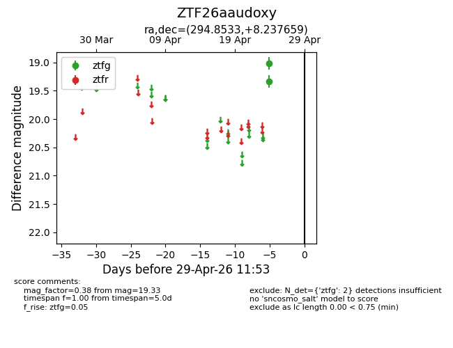
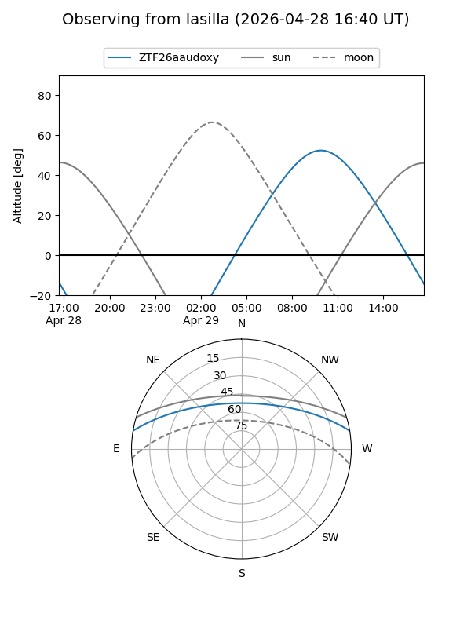
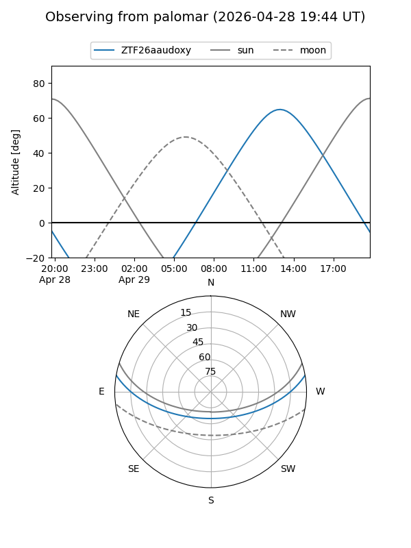

ZTF26aaudoxy
Target ZTF26aaudoxy at 2026-04-29 11:57
Aliases and brokers:
FINK: link
Lasair: link
ALeRCE: link
alt names
ZTF26aaudoxy (ztf,fink_ztf)
Coordinates:
equatorial (ra, dec) = 294.8533,+8.23766
equatorial (HMS+DMS) = 19:39:24.80,+08:14:15.57
galactic (l, b) = (45.8081,-6.75961)
Flags:
Photometry:
last ztfg=19.33
2 ztfg detections
Lightcurve

Visibility


Additional plots